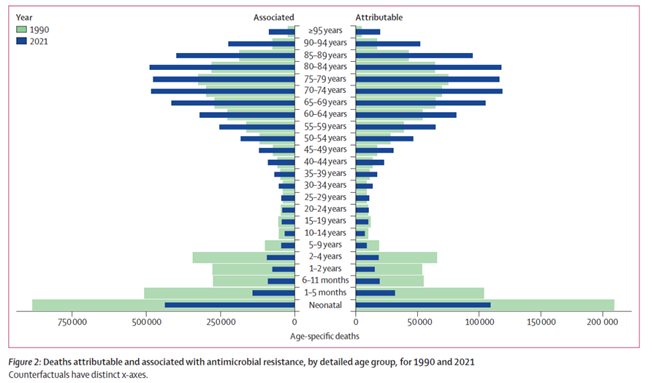
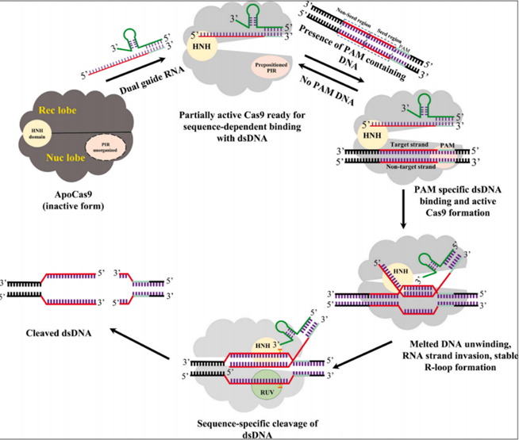

Description
耐药性危机
自抗生素发现以来，其大量使用（甚至是滥用）已造成耐药菌的广泛出现，大幅削弱了抗生素疗法的效果。
研究显示，即使经过了31年的科技发展，2021年中耐药菌在20岁及以上人群中直接/间接造成的死亡数相较1990年都有上升，足见耐药性威胁增大之严峻。

图中展示了1990-2021年抗生素相关/直接导致的疾病在各年龄段造成的死亡。其中，0-19岁人群死亡数下降，但20岁及以上人群死亡数在31年的科技发展后反而上升。
噬菌体疗法
为解决上述问题，研究者们捡起了被雪藏已久的噬菌体疗法，通过使用对应的噬菌体来杀灭耐药菌，并取得了尚可的疗效。
然而，在细菌与噬菌体的长期协同进化中，细菌表现出了各种抵御噬菌体侵染的机制，包括CRISPR系统，流产感染系统等。可以预见，在噬菌体的选择压力下，会出现拥有噬菌体抗性的耐药菌。
图中是一名患有耐碳青霉烯鲍曼不动杆菌感染引发的重症急性胰腺炎的患者，在包括抗生素疗法在内的传统治疗手段全部失效的情况下，西安交通大学第一附属医院于今年9月对患者使用噬菌体疗法，成功使患者脱离生命危险，并初步恢复正常生活能力。
CRISPR再敏化疗法
在噬菌体疗法之外，也有研究者尝试利用CRISPR-Cas系统特异性切除目标基因，以期实现耐药菌的去敏化。
然而，这种技术存在着杀伤非致病菌的特异性问题，且CRISPR-Cas系统不易进入细胞。如果利用噬菌体搭载CRISPR-Cas系统，虽然解决了特异性问题，但又带来了新的限制：
1. 部分噬菌体容量较小，无法携带大体积的CRISPR-Cas系统，限制了目标细菌范围，或必须分装在不同噬菌体个体中，降低工作效率。
2. 噬菌体在与细菌的协同进化过程中产生的Anti-CRISPR系统也会降低CRISPR-Cas系统工作效率。
3. 如果不去除噬菌体增殖能力，会杀死一切对噬菌体敏感的细菌，推动细菌向双抗性方向进化；如果去除增殖能力，则需要增加给药量与给药频率，或工作效率低下。

图中展示了CRISPR-Cas系统靶向切割细菌耐药基因的大体流程。与常见的CRISPR基因编辑过程类似，研究者通过编辑sgRNA特异性识别并切割了碳青霉烯酶基因（blaKPC, blaNDM）和移动性粘菌素耐药基因（mcr-1）
基于上述两种疗法的局限，本课题提出噬菌体-TnpB疗法：将小型化的 TnpB基因编辑系统与噬菌体疗法融合，通过噬菌体的高特异性实现TnpB系统的精准递送，同时将噬菌体增殖与耐药基因切割关联——仅在TnpB切割耐药基因触发细菌SOS响应时，噬菌体才启动增殖，既保证杀菌效率，又避免无差别杀伤非致病菌，实现"高效、高特异、单次给药"的耐药菌再敏化目标。